1:58:35 · 26 OPERE
Introduzione al culto mormonico.
Il filo del discorso
Dr Divago propone una lunga presentazione critica delle origini e delle dottrine del mormonismo, usando slide, testi religiosi, testimonianze e una rassegna di libri. Il Libro di Mormon è discusso attraverso traduzione, revisioni, narrazioni di migrazioni e guerre e rapporto con archeologia e genetica. Seguono la Prima Visione, la figura di Joseph Smith, il Nauvoo Expositor e la poligamia. La seconda parte esamina cosmologia, tempio, battesimo per i defunti, genealogia e Libro di Abramo, contrapponendo le interpretazioni religiose alla lettura storica e documentaria. La critica si estende al linguaggio dell’autorità, con Lifton, la satira cinematografica e teatrale e i tre dialoghi di Anselmo sulla verità e sulla libertà. La scheda conserva la prospettiva polemica come voce del relatore e distingue i dati verificabili dalle accuse e dalle inferenze. Corregge in particolare l’equivalenza fra i dodici buoi del fonte e il vitello d’oro, la confusione fra Ancestry e FamilySearch e le generalizzazioni sui rapporti con il nazismo. I giudizi teologici o morali non vengono trasferiti come fatti all’intelligenza, alla salute mentale o alla condotta di tutti i fedeli.
I libri nel discorso

Tutto quello (o quasi) che avreste voluto sapere sui mormoni, ma non avete mai osato chiedere
Identificazione probabile
Copertina: Edizioni Teotokos · copertina fotografata nel video dell’autore
Fotografia della copertina nella miniatura originale del video «I mormoni e la mentalità settaria», conservata intera. Anno e ISBN della copia fotografata non sono verificabili; resta la divergenza 1992/1993 documentata nella voce.
Il relatore ricorda un proprio testo sul mormonismo scritto negli anni Novanta e ne mostra ancora uno a 3901 s, senza leggere il titolo. L’identificazione del volume resta probabile; anno ed edizione della copia non sono confermati.
Passaggio 1:46 ↗ · Fonti e libro ↗
Libro di Mormon
Copertina: Church Distribution · edizione italiana di riferimento
Copertina reale di riferimento; l’edizione non è identificata come quella citata nel video.
Titolo ripetutamente esplicito; il video discute prima edizione, traduzione, revisioni, personaggi e presunti riscontri storici. Non è il musical omonimo.
Passaggio 3:44 ↗ · Fonti e libro ↗
Bibbia
Copertina: San Paolo, 2014 · Nuova Versione dai Testi Antichi · edizione di riferimento
Fonte religiosa generale ripetutamente esplicita, con King James Version, Galati 1:8, Genesi 3, Proverbi 6:12–14, Esodo 32, 1 Giovanni 5, Giovanni 8:32, Amos 5:10 e Matteo 7:16–20. Si registra il testo collettivo, senza inventare nuove edizioni o volumi autonomi da ogni passo.
Passaggio 4:17 ↗ · Fonti e libro ↗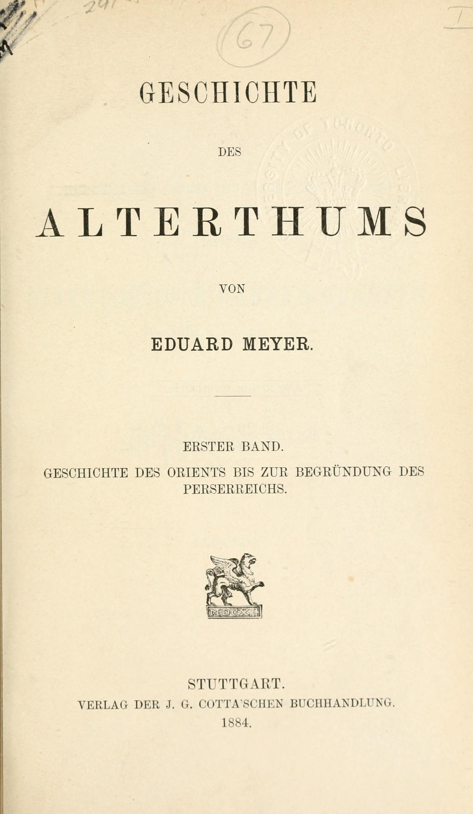
Geschichte des Altertums
Frontespizio vol. I (1884), Geschichte des Orients bis zur Begründung des Perserreichs: Frontespizio vol. I (1884), Geschichte des Orients bis zur Begründung des Perserreichs
Frontespizio autentico del primo volume dell’opera di Meyer, Cotta, Stuttgart 1884, dalla scansione Robarts/Toronto. Edizione e volume illustrativi, non identificazione della copia del relatore; la sua menzione di quattro volumi non è stata verificata visivamente. Non è il frontespizio del distinto trattato sui mormoni.
Nel passaggio: Meyer nominato nella forma nella trascrizione automatica deformata, storico/egittologo; Storia dell’antichità esplicita in italiano, descritta come monumentale e in quattro volumi. Identità bibliografica riscontrata sul frontespizio 1884 e nei metadati della biblioteca.
Passaggio 1:02:53 ↗ · Fonti e libro ↗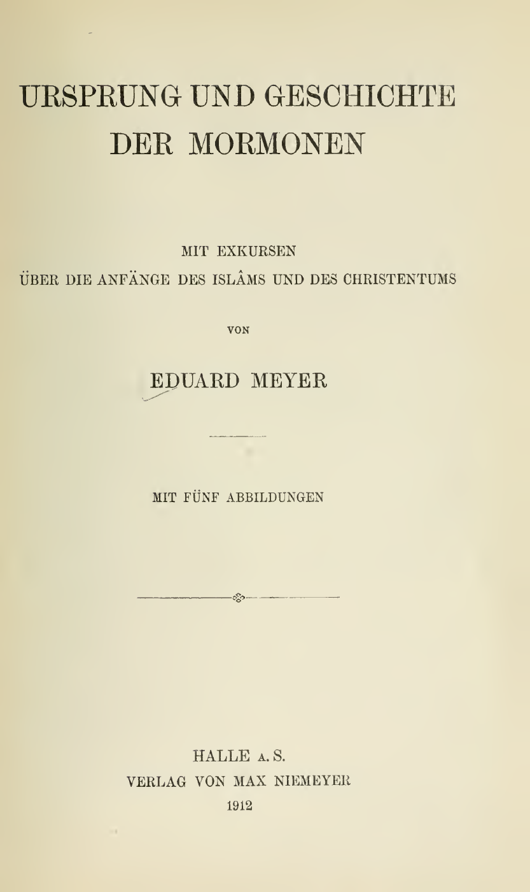
Ursprung und Geschichte der Mormonen. Mit Exkursen über die Anfänge des Islâms und des Christentums
Frontespizio della edizione 1912: Eduard Meyer, Halle a. S., Verlag von Max Niemeyer, 1912, con cinque illustrazioni. Immagine del frontespizio della digitalizzazione storica, pagina PDF 7.
Frontespizio, pagina 7 della copia digitale. Titolo, autore, editore e anno leggibili. Non è una copertina esterna e non è stato ricostruito; il volume fisico del relatore non è identificato. L’immagine del frontespizio è dichiarata anche nell’etichetta pubblica.
Eduard Meyer e Origine e storia dei mormoni espliciti, con paragone fra origini religiose. L’opera è distinta da Geschichte des Altertums.
Passaggio 1:02:58 ↗ · Fonti e libro ↗
Perla di Gran Prezzo (The Pearl of Great Price)
Copertina: F.D.Richards ·Liverpool 1851 ·frontespizio prima edizione
Frontespizio autentico intero della prima raccolta 1851: Joseph Smith, F.D.Richards, Liverpool, anno 1851 e timbro Public Library of Victoria. È frontespizio, non copertina esterna contemporanea. Non il manuale per studenti o il diverso libro da colorare della stessa Chiesa.
Titolo esplicito La perla di Gran Prezzo e discussione del Libro di Abramo e dei facsimili, parti della raccolta. Il racconto dell’acquisto dei papiri è distinto dall’interpretazione religiosa della traduzione.
Passaggio 1:26:20 ↗ · Fonti e libro ↗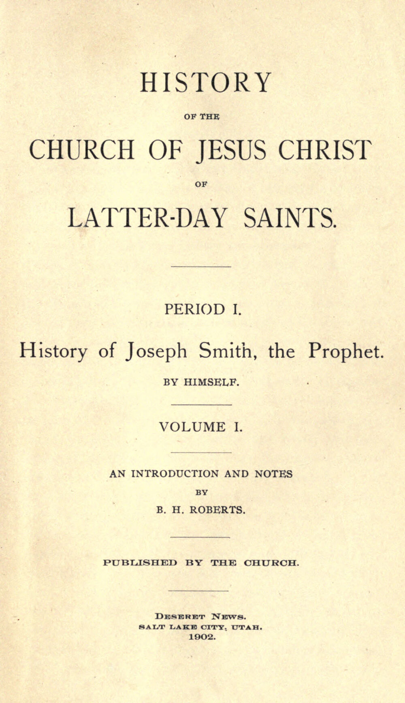
History of the Church of Jesus Christ of Latter-day Saints (raccolta a cura di B. H. Roberts)
Identificazione probabile
Frontespizio del volume I (1902): History of the Church, Period I, volume I, Salt Lake City, Deseret News, 1902: frontespizio originale, copia University of California Libraries.
Frontespizio del volume I 1902, non del volume II, pp. 235–236 a cui corrisponde il passo letto, né del manoscritto B-1. Titolo generale, History of Joseph Smith, the Prophet/by himself e introduzione/note B. H. Roberts visibili. Non identificata l’edizione posseduta dal relatore.
History of the Church è nominato in inglese, insieme alle quattro figure umane e ai papiri; un secondo richiamo riguarda gli scritti attribuiti ad Abramo e Giuseppe d’Egitto. Corrispondenza specifica con vol. II pp. 235–236 nella trascrizione primaria BYU; curatore, pagine ed edizione non pronunciati.
Passaggio 1:27:25 ↗ · Fonti e libro ↗
Thought Reform and the Psychology of Totalism. A Study of “Brainwashing” in China
Identificazione probabile
Copertina: University of North Carolina Press · ristampa 1989 con nuova prefazione
Copertina autentica scaricata dal servizio immagini collegato direttamente al catalogo UNC Press per ISBN 9780807842539. Titolo completo, autore e nuova prefazione sono visibili. Si distingue la ristampa cartacea 1989 dalla prima Norton 1961 e dall’ebook 2012 ISBN 9780807882887; quest’ultimo ISBN non è assegnato all’immagine cartacea. Immagine conservata intera.
Lifton e thought-terminating cliché sono nominati e la definizione è parafrasata; il titolo del libro non è ripetuto. Collegamento probabile all’opera già verificata, senza diagnosticare tutti i fedeli attraverso il modello.
Passaggio 1:42:13 ↗ · Fonti e libro ↗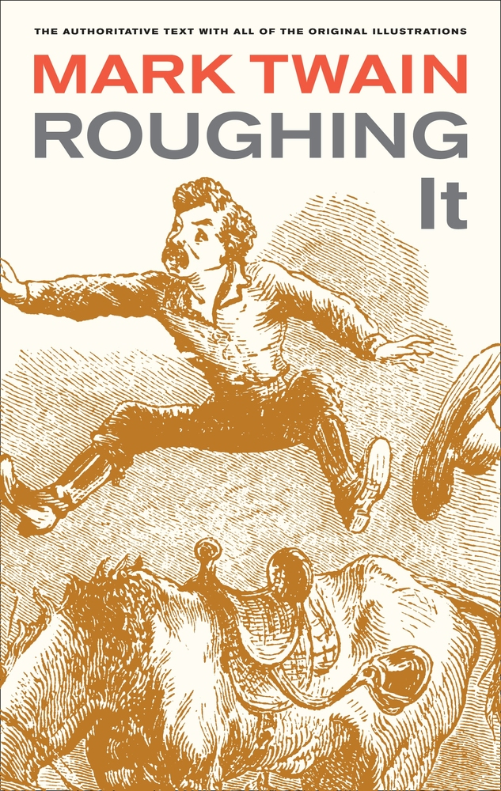
Roughing It
Identificazione probabile
University of California Press, 2011 · ISBN 9780520268173: University of California Press, 2011 · ISBN 9780520268173
Copertina autentica della riedizione critica 2011, non dell’edizione 1872; nessuna edizione è identificata nel video.
La frase sul Libro di Mormon come cloroformio stampato è attribuita a Twain. Il titolo non è pronunciato ma il passo è identificato nel capitolo XVI di Roughing It; menzione indiretta, non recensione del volume.
Passaggio 3:44 ↗ · Fonti e libro ↗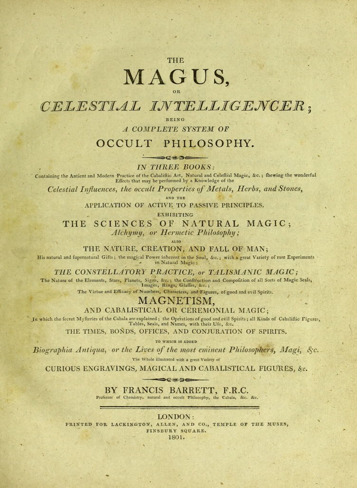
The Magus, or Celestial Intelligencer
Londra, Lackington, Allen and Co., 1801 · frontespizio: Londra, Lackington, Allen and Co., 1801 · frontespizio
Frontespizio originale intero della scansione Wellcome b 22006795, canvas 17. Non copertina esterna o pagina del Libro di Mormon. La somiglianza grafica discussa nel filmato non dimostra da sola un prestito diretto.
Autore Francis Barrett, titolo e data 1801 espliciti; Dr Divago confronta i caratteri del volume con l’Anthon Transcript. Il presunto rapporto di derivazione resta una sua ipotesi.
Passaggio 25:50 ↗ · Fonti e libro ↗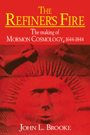
The Refiner’s Fire: The Making of Mormon Cosmology, 1644–1844
Cambridge University Press · brossura ISBN 9780521565646: Cambridge University Press · brossura ISBN 9780521565646
Copertina inglese Cambridge della stessa opera pubblicata inizialmente nel 1994. Non viene identificato il formato dell’esemplare mostrato.
John Brooke e il sottotitolo sulla formazione della cosmologia mormone sono pronunciati. L’identificazione completa è verificata nel catalogo Cambridge; il video presenta il libro come lettura, senza leggerlo integralmente.
Passaggio 27:22 ↗ · Fonti e libro ↗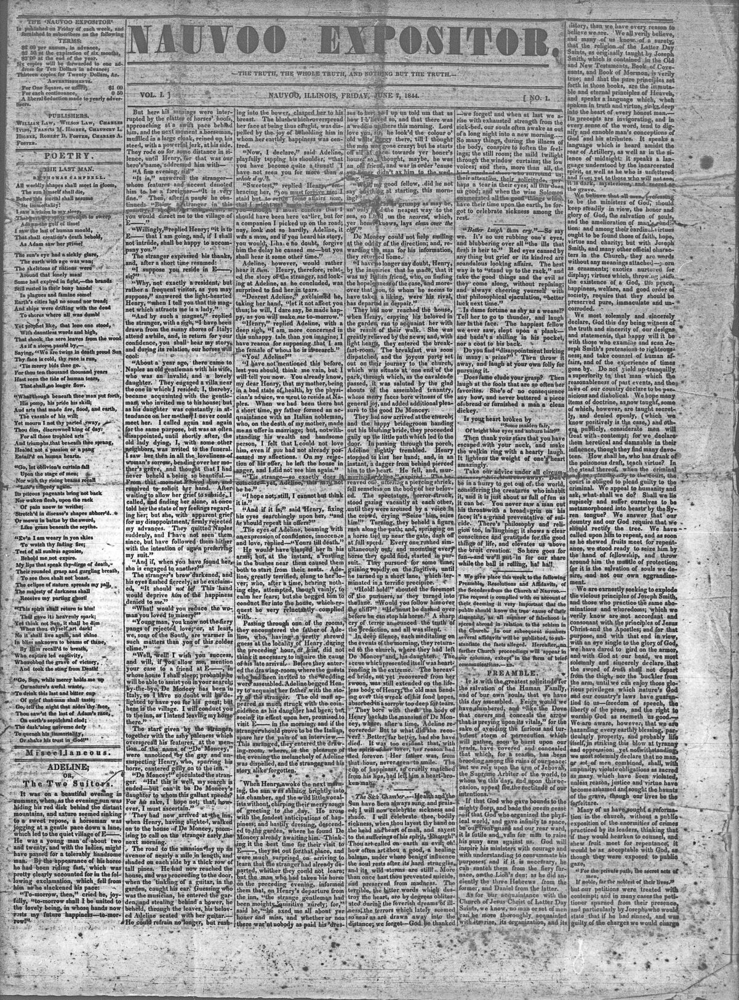
Nauvoo Expositor, vol. I, n. 1, 7 giugno 1844
Nauvoo Expositor · 7 giugno 1844 · prima pagina originale: Nauvoo Expositor · 7 giugno 1844 · prima pagina originale
Prima pagina dell’unico numero del giornale, foglia 1 della scansione. La foglia 0, prospetto del 10 maggio 1844, è esclusa come immagine del numero. Non è la replica tipografica moderna pubblicata da UTLM.
Giornale e anno 1844 sono riconoscibili nella presentazione e il nome viene pronunciato a 3646 s. Le accuse contenute nel giornale sono testimonianze polemiche contemporanee da valutare, non tutte automaticamente accertate.
Passaggio 58:04 ↗ · Fonti e libro ↗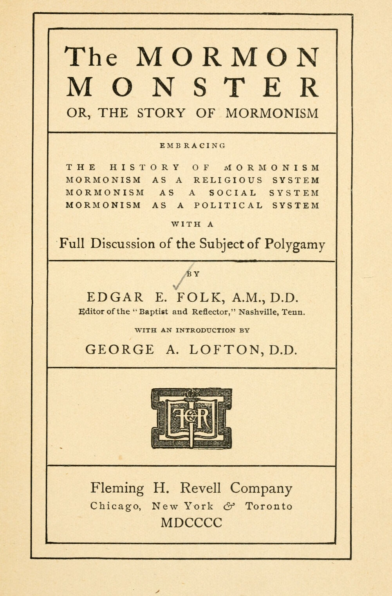
The Mormon Monster, or, The Story of Mormonism
Fleming H. Revell, 1900 · frontespizio: Fleming H. Revell, 1900 · frontespizio
Frontespizio originale intero, foglia 11. Il testo appartiene alla letteratura polemica battista; l’antichità della pubblicazione non convalida automaticamente tutte le sue accuse.
Titolo The Mormon Monster e anno 1900 espliciti; autore verificato dal frontespizio. Presentazione bibliografica, non lettura integrale del volume.
Passaggio 1:00:55 ↗ · Fonti e libro ↗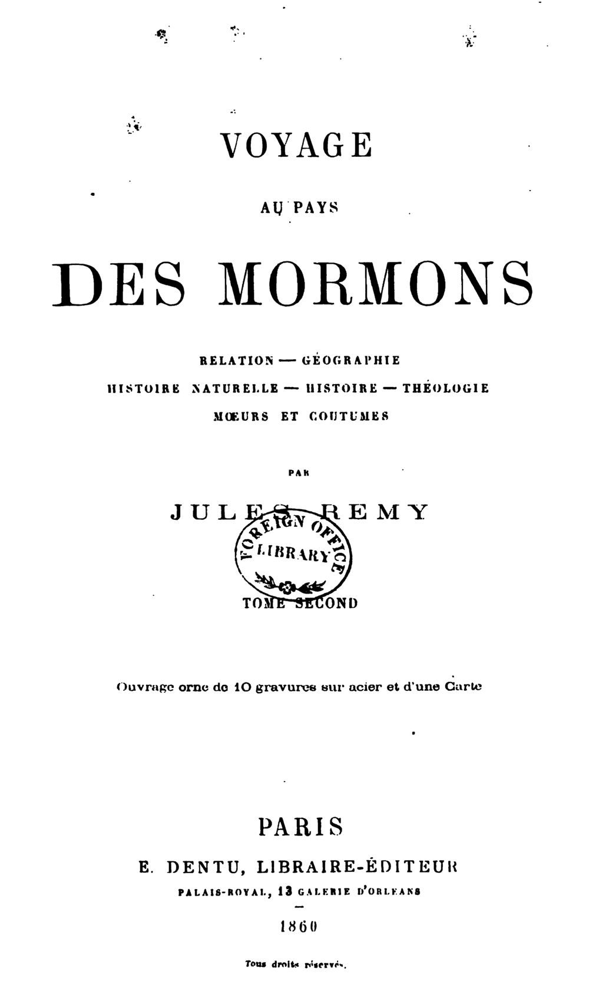
Voyage au pays des Mormons: relation, géographie, histoire naturelle, histoire, théologie, mœurs et coutumes
Parigi, E. Dentu, 1860 · frontespizio del tomo secondo: Parigi, E. Dentu, 1860 · frontespizio del tomo secondo
Frontespizio originale del secondo tomo, dichiarato come parte dell’opera in due volumi; non un secondo titolo né una nuova traduzione. La menzione non identifica il tomo materialmente mostrato.
Il relatore nomina Jules Rémy, il viaggio nel paese dei mormoni e il 1860. Il repertorio archivistico conferma la pubblicazione in due volumi.
Passaggio 1:03:50 ↗ · Fonti e libro ↗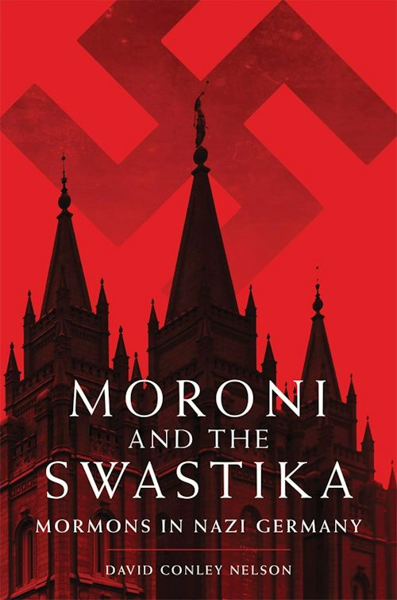
Moroni and the Swastika: Mormons in Nazi Germany
Identificazione probabile
University of Oklahoma Press, 2015 · ISBN 9780806146683: University of Oklahoma Press, 2015 · ISBN 9780806146683
Copertina autentica dell’edizione 2015. La svastica è parte della copertina dello studio storico, non un simbolo promosso dalla scheda. David Conley è forma abbreviata e incompleta del nome nel parlato.
Anno 2015, autore indicato come David Conley e argomento dei rapporti fra mormoni e nazismo identificano il libro. L’autore completo è David Conley Nelson; la mancata pronuncia del titolo completo mantiene la menzione probabile.
Passaggio 1:04:10 ↗ · Fonti e libro ↗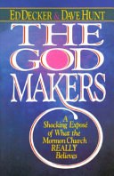
The God Makers
The God Makers · copertina associata al record Harvest House 1984 di Google Books: The God Makers · copertina associata al record Harvest House 1984 di Google Books
Copertina autentica della stessa opera, associata al record del volume 1984: la specifica tiratura dell’immagine non è confermata dalla sola copertina. È distinta dal film omonimo. La pagina attuale dell’editore riguarda anche una successiva edizione ebook.
Autori, titolo inglese e libro 1984 sono espliciti. Il film è nominato separatamente e resta un’opera distinta da recuperare; non si trasferiscono automaticamente alla scheda le tesi polemiche del libro.
Passaggio 1:05:09 ↗ · Fonti e libro ↗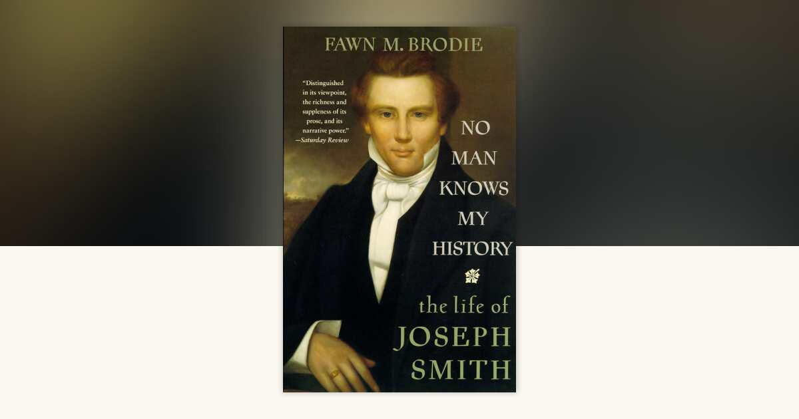
No Man Knows My History: The Life of Joseph Smith
Vintage, 1995 · ISBN 9780679730545 · riproduzione editoriale della copertina: Vintage, 1995 · ISBN 9780679730545 · riproduzione editoriale della copertina
Immagine promozionale dell’editore con la copertina del volume. È la riedizione Vintage 1995, non la copertina originale 1945 e non un generico ritratto di Joseph Smith.
Nome Brodie e titolo italiano reso come Nessuno conosce la mia storia sono riconoscibili; il catalogo dell’editore verifica titolo inglese e autrice. La forma nella trascrizione automatica del nome non è assunta come grafia corretta.
Passaggio 1:06:13 ↗ · Fonti e libro ↗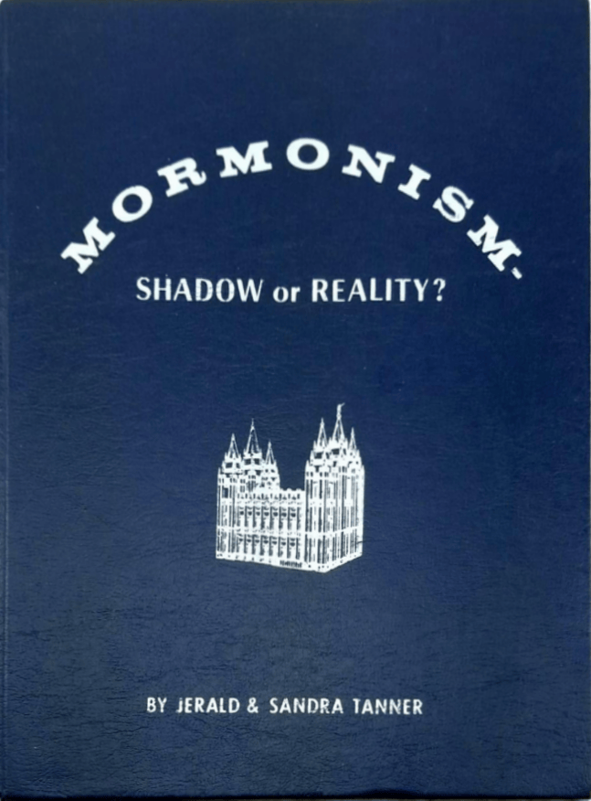
Mormonism—Shadow or Reality?
Modern Microfilm Company, edizione ampliata 1982 · copertina: Modern Microfilm Company, edizione ampliata 1982 · copertina
Copertina autentica 1982 riprodotta dall’ente degli autori, distinta dalla prima edizione 1964 e dalla riformattazione 2008. La sua provenienza non rende neutrali le interpretazioni del ministero apologetico.
Jerald e Sandra Tanner e titolo Mormonismo ombra o realtà sono espliciti. Il libro sulla Prima Visione citato prima senza titolo non viene automaticamente identificato con questo volume.
Passaggio 1:06:32 ↗ · Fonti e libro ↗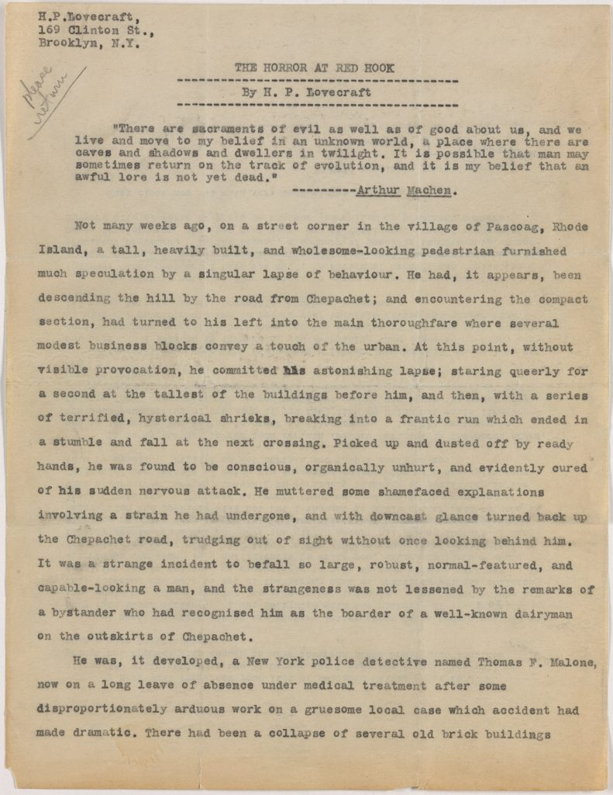
The Horror at Red Hook
Brown University Library · prima pagina del dattiloscritto originale: Brown University Library · prima pagina del dattiloscritto originale
Prima pagina originale del dattiloscritto del racconto, non copertina libraria. Brown distingue composizione 1925 e pubblicazione 1927 e contestualizza il razzismo del testo. Il racconto non dimostra l’origine del nome della religione.
Titolo inglese esplicito nel richiamo al nome Mormo. Una presenza in una finzione moderna o una somiglianza greca non è prova di derivazione etimologica o demonologica del mormonismo.
Passaggio 1:13:36 ↗ · Fonti e libro ↗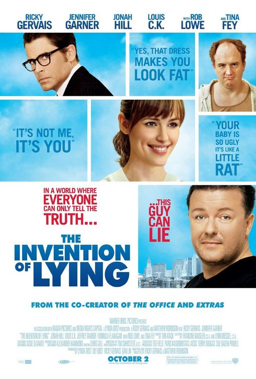
The Invention of Lying
Locandina del film The Invention of Lying, 2009: Locandina statunitense del film 2009 · archivio IMP Awards · design Cold Open
Locandina autentica intera del film, conservata nell’archivio IMP Awards e attribuita allo studio grafico Cold Open. Titolo, cast, crediti e uscita October 2 coerenti con il sito ufficiale del regista.
Il film è esplicitamente nominato in traduzione letterale L’invenzione della menzogna e ne viene descritta la premessa. Identità, registi e uscita 2 ottobre 2009 sono verificati presso il sito dell’autore.
Passaggio 45:38 ↗ · Fonti e libro ↗
Amici miei
Locandina di Amici miei, film 1975 · repertorio Cinematografo: Locandina di Amici miei, film 1975 · repertorio Cinematografo
Locandina completa del primo film 1975, a risoluzione limitata; non Amici miei–Atto II°, usata come voce distinta. La scena del genio è richiamata come analogia comica.
Titolo esplicito e citazione del Perozzi su fantasia, intuizione, colpo d’occhio e velocità d’esecuzione. Il primo film è del 1975 e va distinto dal seguito.
Passaggio 1:28:13 ↗ · Fonti e libro ↗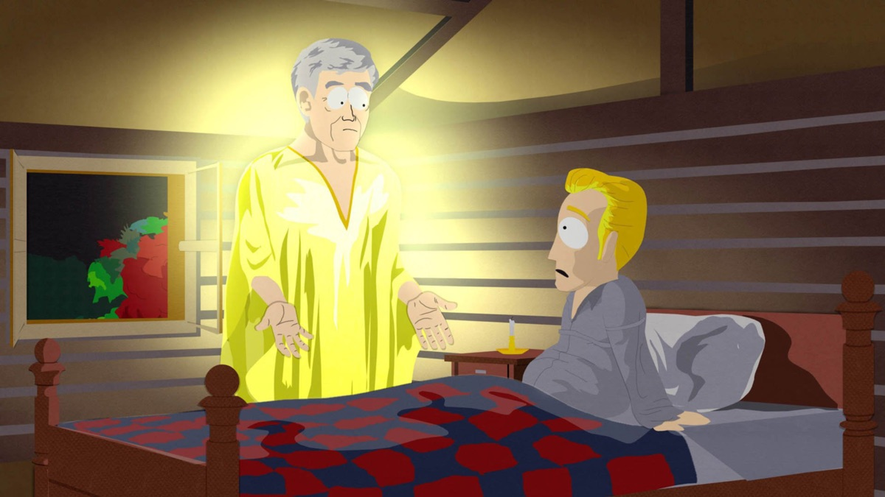
All About Mormons
Identificazione probabile
Still promozionale della scheda Apple TV: All About Mormons, South Park S7E12: Still promozionale della scheda Apple TV: All About Mormons, South Park S7E12
La pagina Apple associa l’immagine a questo specifico episodio. Non è una copertina DVD né un fotogramma estratto dal video del relatore. Nessuno streaming o visione integrale dell’episodio effettuati.
Nel passaggio: South Park esplicito, episodio non titolato, coro Dum Dum Dum Dum Dum descritto. La specifica scheda ufficiale collega quella canzone ad All About Mormons, S7E12,19 novembre 2003.
Passaggio 1:50:24 ↗ · Fonti e libro ↗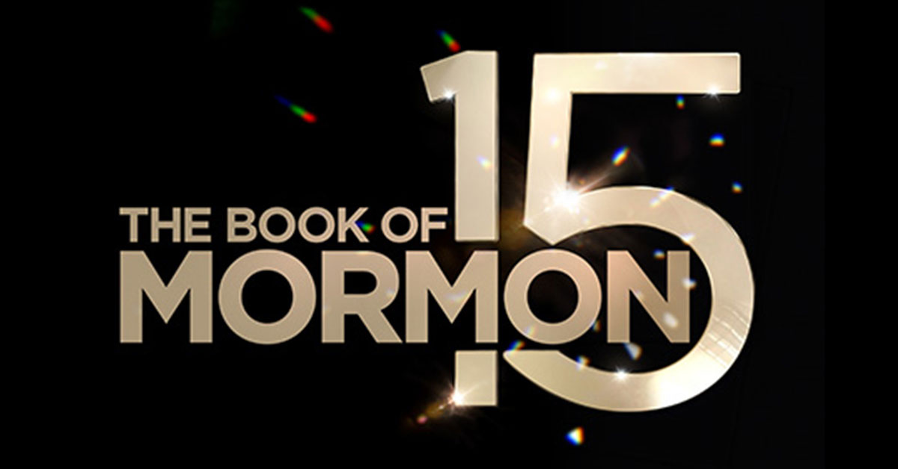
The Book of Mormon (musical)
Produzione ufficiale Broadway · grafica promozionale del quindicesimo anniversario, 2026: Produzione ufficiale Broadway · grafica promozionale del quindicesimo anniversario, 2026
Grafica ufficiale celebrativa dei quindici anni: non copertina del testo religioso, né immagine della prima produzione 2011. Musical e Libro di Mormon restano voci distinte.
Il relatore nomina esplicitamente il musical di Broadway. La Broadway League verifica autori e prima del 24 marzo 2011; non è il libro religioso omonimo.
Passaggio 1:50:51 ↗ · Fonti e libro ↗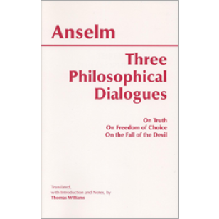
De veritate (La verità)
Hackett, 2002 · raccolta Three Philosophical Dialogues · traduzione Thomas Williams, ISBN 9780872206113: Hackett, 2002 · raccolta Three Philosophical Dialogues · traduzione Thomas Williams, ISBN 9780872206113
Copertina dell’autentica raccolta inglese che contiene tutti e tre i dialoghi esplicitamente elencati. Il singolo dialogo non ha qui copertina autonoma; nessuna edizione della fonte è identificata nel video.
Il relatore nomina Anselmo e i tre dialoghi, con titolo latino deformato dalla trascrizione automatica; il catalogo Hackett verifica il contenuto della raccolta.
Passaggio 1:53:25 ↗ · Fonti e libro ↗De libertate arbitrii (La libertà di scelta)
Hackett, 2002 · raccolta Three Philosophical Dialogues · traduzione Thomas Williams, ISBN 9780872206113: Hackett, 2002 · raccolta Three Philosophical Dialogues · traduzione Thomas Williams, ISBN 9780872206113
Copertina dell’autentica raccolta inglese che contiene tutti e tre i dialoghi esplicitamente elencati. Il singolo dialogo non ha qui copertina autonoma; nessuna edizione della fonte è identificata nel video.
Il relatore nomina Anselmo e i tre dialoghi, con titolo latino deformato dalla trascrizione automatica; il catalogo Hackett verifica il contenuto della raccolta.
Passaggio 1:53:25 ↗ · Fonti e libro ↗De casu diaboli (La caduta del diavolo)
Hackett, 2002 · raccolta Three Philosophical Dialogues · traduzione Thomas Williams, ISBN 9780872206113: Hackett, 2002 · raccolta Three Philosophical Dialogues · traduzione Thomas Williams, ISBN 9780872206113
Copertina dell’autentica raccolta inglese che contiene tutti e tre i dialoghi esplicitamente elencati. Il singolo dialogo non ha qui copertina autonoma; nessuna edizione della fonte è identificata nel video.
Il relatore nomina Anselmo e i tre dialoghi, con titolo latino deformato dalla trascrizione automatica; il catalogo Hackett verifica il contenuto della raccolta.
Passaggio 1:53:29 ↗ · Fonti e libro ↗Fonti e approfondimenti (20)
- Genetica: ricerca originale Reich e altri, Nature 2012, DOI 10.1038/nature 11258 ↗
- Chiesa LDS · posizione ufficiale su Libro di Mormon, DNA e revisione introduzione 2006 ↗
- Library of Congress · frontespizio depositato per copyright,11 giugno 1829 ↗
- BYU · dichiarazioni primarie e nota sul termine author nel copyright ↗
- Joseph Smith Papers · ordine originale di distruggere la stampa,10 giugno 1844 ↗
- Chiesa LDS · Dichiarazione ufficiale 1, Manifesto 1890 ↗
- Memoriale Plötzensee · documenti e condanna di Helmuth Hübener ↗
- Testo primario biblico ·2 Cronache 4:4, bacino sui dodici buoi ↗
- Chiesa LDS · descrizione del battesimo per procura e sua accettazione ↗
- Blackstone · acquisizione Ancestry completata 4 dicembre 2020, venditori indicati ↗
- Ancestry · accordo di contenuti con FamilySearch, enti distinti ↗
- Chiesa LDS · papiri, Libro di Abramo, pubblicazione 1842 e divergenza dall’egittologia ↗
- Joseph Smith Papers · storia manoscritta e differenza dalla raccolta curata da Roberts ↗
- South Park, sito ufficiale · All About Mormons, stagione 7 episodio 12,19 novembre 2003 ↗
- Jeremiah Films · The God Makers, distinto dal libro ↗
- archive.org ↗
- byustudies.byu.edu ↗
- churchofjesuschrist.org ↗
- dialoguejournal.com ↗
- josephsmithpapers.org ↗